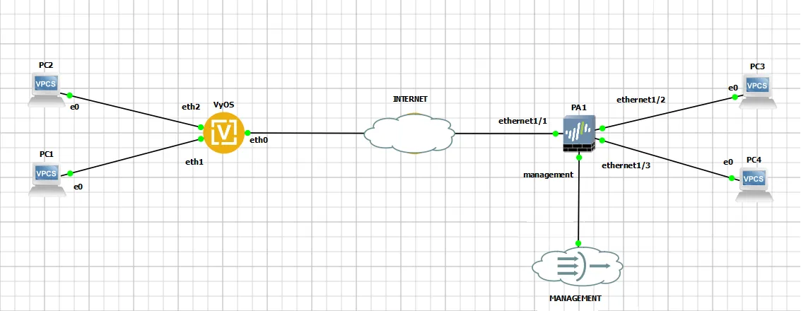
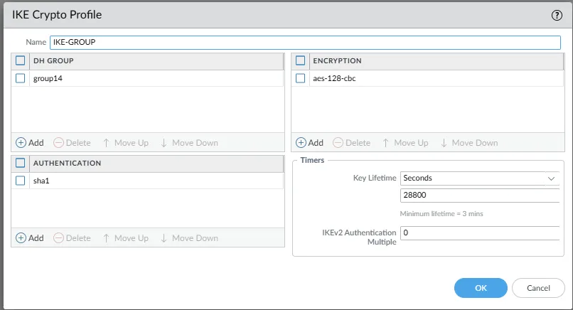
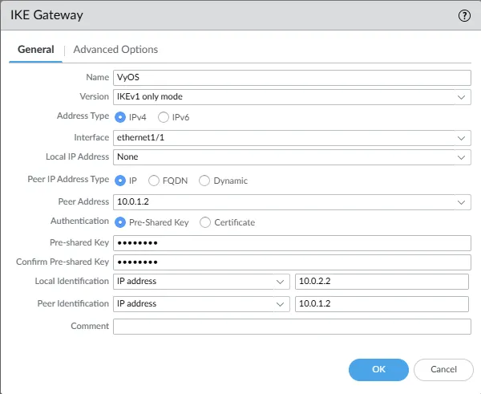
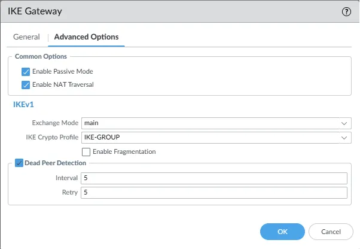
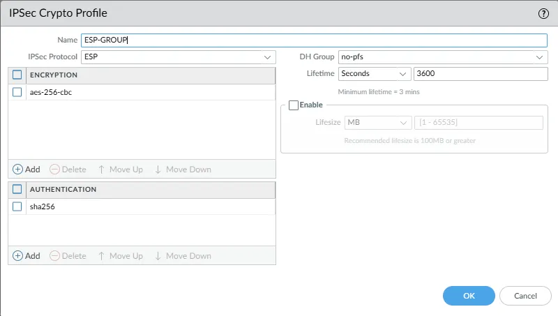
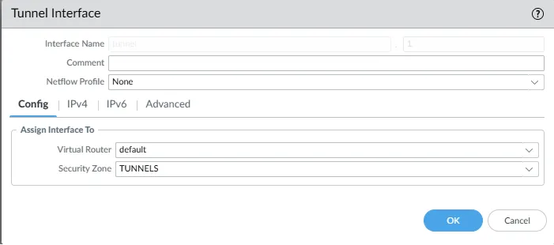
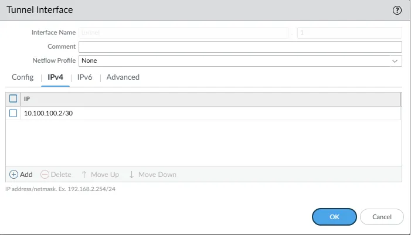
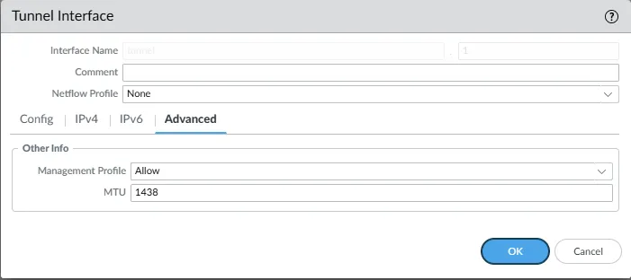
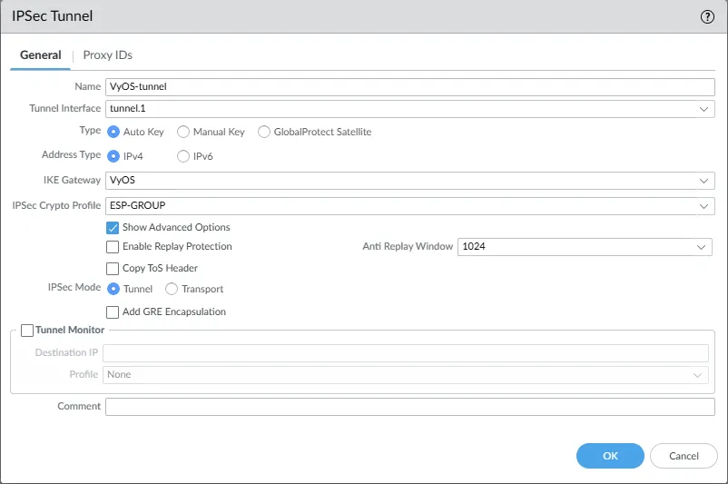

Route-based Site-to-Site VPN IPsec between VyOS and Palo Alto
This document is to describe a basic setup using route-based site-to-site VPN IPsec. In this example we use VyOS 1.5 and PA 11.0.0. OSPF is selected as routing protocol inside the tunnel.
Since this example focuses on IPsec configuration it does not include firewall configuration.
Network Topology

Prerequirements
VyOS:
WAN IP |
10.0.1.2/30 |
LAN1 IP |
192.168.0.1/24 |
LAN2 IP |
192.168.1.1/24 |
Palo Alto:
WAN IP |
10.0.2.2/30 |
LAN1 IP |
192.168.10.1/24 |
LAN2 IP |
192.168.11.1/24 |
IKE parameters:
Encryption |
AES-128 |
HASH |
SHA-1 |
Diff-Helman Group |
14 |
Life-Time |
28800 |
IKE Version |
1 |
IPsec parameters:
Encryption |
AES-256 |
HASH |
SHA-256 |
Life-Time |
3600 |
PFS |
disable |
Hosts configuration
PC1 IP |
192.168.0.2 |
PC2 IP |
192.168.1.2 |
PC3 IP |
192.168.10.2 |
PC4 IP |
192.168.11.2 |
Configuration
VyOS
set interfaces ethernet eth0 address '10.0.1.2/30'
set interfaces ethernet eth1 address '192.168.0.1/24'
set interfaces ethernet eth2 address '192.168.1.1/24'
set interfaces vti vti1 address '10.100.100.1/30'
set interfaces vti vti1 mtu '1438'
set protocols ospf area 0 network '10.100.100.0/30'
set protocols ospf area 0 network '192.168.0.0/24'
set protocols ospf area 0 network '192.168.1.0/24'
set protocols ospf interface eth1 passive
set protocols ospf interface eth2 passive
set protocols ospf interface vti1 network 'point-to-point'
set protocols ospf parameters router-id '2.2.2.2'
set protocols static route 0.0.0.0/0 next-hop 10.0.1.1
set vpn ipsec authentication psk AUTH-PSK id '10.0.1.2'
set vpn ipsec authentication psk AUTH-PSK id '10.0.2.2'
set vpn ipsec authentication psk AUTH-PSK secret 'dGVzdA=='
set vpn ipsec authentication psk AUTH-PSK secret-type 'base64'
set vpn ipsec esp-group ESP-GROUP lifetime '3600'
set vpn ipsec esp-group ESP-GROUP pfs 'disable'
set vpn ipsec esp-group ESP-GROUP proposal 10 encryption 'aes256'
set vpn ipsec esp-group ESP-GROUP proposal 10 hash 'sha256'
set vpn ipsec ike-group IKE-GROUP close-action 'start'
set vpn ipsec ike-group IKE-GROUP dead-peer-detection action 'restart'
set vpn ipsec ike-group IKE-GROUP dead-peer-detection interval '10'
set vpn ipsec ike-group IKE-GROUP dead-peer-detection timeout '30'
set vpn ipsec ike-group IKE-GROUP key-exchange 'ikev1'
set vpn ipsec ike-group IKE-GROUP lifetime '28800'
set vpn ipsec ike-group IKE-GROUP proposal 10 dh-group '14'
set vpn ipsec ike-group IKE-GROUP proposal 10 encryption 'aes128'
set vpn ipsec ike-group IKE-GROUP proposal 10 hash 'sha1'
set vpn ipsec options disable-route-autoinstall
set vpn ipsec site-to-site peer PA authentication local-id '10.0.1.2'
set vpn ipsec site-to-site peer PA authentication mode 'pre-shared-secret'
set vpn ipsec site-to-site peer PA authentication remote-id '10.0.2.2'
set vpn ipsec site-to-site peer PA connection-type 'initiate'
set vpn ipsec site-to-site peer PA default-esp-group 'ESP-GROUP'
set vpn ipsec site-to-site peer PA ike-group 'IKE-GROUP'
set vpn ipsec site-to-site peer PA local-address '10.0.1.2'
set vpn ipsec site-to-site peer PA remote-address '10.0.2.2'
set vpn ipsec site-to-site peer PA vti bind 'vti1'
Palo Alto
- GUI Configuration:
Network -> Network Profiles -> IKE Crypto

Network -> Network Profiles -> IKE Gateways


Network -> Network Profiles -> IPSec Crypto

Network -> Interfaces



Network -> IPSec Tunnels

CLI configuration with OSPF:
set network interface ethernet ethernet1/1 layer3 ip 10.0.2.2/30
set network interface ethernet ethernet1/1 layer3 interface-management-profile Allow
set network interface ethernet ethernet1/2 layer3 ip 192.168.10.1/24
set network interface ethernet ethernet1/1 layer3 interface-management-profile Allow
set network interface ethernet ethernet1/3 layer3 ip 192.168.11.1/24
set network interface ethernet ethernet1/1 layer3 interface-management-profile Allow
set network interface tunnel units tunnel.1 ip 10.100.100.2/30
set network interface tunnel units tunnel.1 interface-management-profile Allow
set network interface tunnel units tunnel.1 mtu 1438
set network profiles interface-management-profile Allow ping yes
set network ike crypto-profiles ike-crypto-profiles IKE-GROUP hash sha1
set network ike crypto-profiles ike-crypto-profiles IKE-GROUP dh-group group14
set network ike crypto-profiles ike-crypto-profiles IKE-GROUP encryption aes-128-cbc
set network ike crypto-profiles ike-crypto-profiles IKE-GROUP lifetime seconds 28800
set network ike crypto-profiles ipsec-crypto-profiles ESP-GROUP esp authentication sha256
set network ike crypto-profiles ipsec-crypto-profiles ESP-GROUP esp encryption aes-256-cbc
set network ike crypto-profiles ipsec-crypto-profiles ESP-GROUP lifetime seconds 3600
set network ike crypto-profiles ipsec-crypto-profiles ESP-GROUP dh-group no-pfs
set network ike gateway VyOS authentication pre-shared-key key test
set network ike gateway VyOS protocol ikev1 dpd enable yes
set network ike gateway VyOS protocol ikev1 exchange-mode main
set network ike gateway VyOS protocol ikev1 ike-crypto-profile IKE-GROUP
set network ike gateway VyOS protocol ikev2 dpd enable yes
set network ike gateway VyOS protocol version ikev1
set network ike gateway VyOS protocol-common nat-traversal enable yes
set network ike gateway VyOS protocol-common fragmentation enable no
set network ike gateway VyOS protocol-common passive-mode yes
set network ike gateway VyOS local-address interface ethernet1/1
set network ike gateway VyOS peer-address ip 10.0.1.2
set network ike gateway VyOS local-id id 10.0.2.2
set network ike gateway VyOS local-id type ipaddr
set network ike gateway VyOS peer-id id 10.0.1.2
set network ike gateway VyOS peer-id type ipaddr
set network tunnel ipsec VyOS-tunnel auto-key ike-gateway VyOS
set network tunnel ipsec VyOS-tunnel auto-key ipsec-crypto-profile ESP-GROUP
set network tunnel ipsec VyOS-tunnel tunnel-monitor enable no
set network tunnel ipsec VyOS-tunnel tunnel-interface tunnel.1
set network tunnel ipsec VyOS-tunnel anti-replay no
set network virtual-router default protocol ospf enable yes
set network virtual-router default protocol ospf area 0.0.0.0 type normal
set network virtual-router default protocol ospf area 0.0.0.0 interface tunnel.1 enable yes
set network virtual-router default protocol ospf area 0.0.0.0 interface tunnel.1 passive no
set network virtual-router default protocol ospf area 0.0.0.0 interface tunnel.1 link-type p2p
set network virtual-router default protocol ospf area 0.0.0.0 interface ethernet1/2 enable yes
set network virtual-router default protocol ospf area 0.0.0.0 interface ethernet1/2 passive yes
set network virtual-router default protocol ospf area 0.0.0.0 interface ethernet1/2 link-type broadcast
set network virtual-router default protocol ospf area 0.0.0.0 interface ethernet1/3 enable yes
set network virtual-router default protocol ospf area 0.0.0.0 interface ethernet1/3 passive yes
set network virtual-router default protocol ospf area 0.0.0.0 interface ethernet1/3 link-type broadcast
set network virtual-router default protocol ospf router-id 1.1.1.1
set network virtual-router default interface [ ethernet1/1 ethernet1/2 ethernet1/3 tunnel.1 ]
Monitoring
Monitoring on VyOS side
IKE SAs:
vyos@vyos:~$ show vpn ike sa
Peer ID / IP Local ID / IP
------------ -------------
10.0.2.2 10.0.2.2 10.0.1.2 10.0.1.2
State IKEVer Encrypt Hash D-H Group NAT-T A-Time L-Time
----- ------ ------- ---- --------- ----- ------ ------
up IKEv1 AES_CBC_128 HMAC_SHA1_96 MODP_2048 no 1372 25802
IPsec SAs:
vyos@vyos:~$ show vpn ipsec sa
Connection State Uptime Bytes In/Out Packets In/Out Remote address Remote ID Proposal
------------ ------- -------- -------------- ---------------- ---------------- ----------- -----------------------------
PA-vti up 23m27s 9K/10K 149/151 10.0.2.2 10.0.2.2 AES_CBC_256/HMAC_SHA2_256_128
OSPF Neighbor Status:
vyos@vyos:~$ show ip ospf neighbor
Neighbor ID Pri State Up Time Dead Time Address Interface RXmtL RqstL DBsmL
1.1.1.1 1 Full/- 23m56s 37.948s 10.100.100.2 vti1:10.100.100.1 0 0 0
Routing Table:
vyos@vyos:~$ show ip route
Codes: K - kernel route, C - connected, L - local, S - static,
R - RIP, O - OSPF, I - IS-IS, B - BGP, E - EIGRP, N - NHRP,
T - Table, v - VNC, V - VNC-Direct, A - Babel, F - PBR,
f - OpenFabric, t - Table-Direct,
> - selected route, * - FIB route, q - queued, r - rejected, b - backup
t - trapped, o - offload failure
S>* 0.0.0.0/0 [1/0] via 10.0.1.1, eth0, weight 1, 00:27:30
C>* 10.0.1.0/30 is directly connected, eth0, weight 1, 00:27:34
L>* 10.0.1.2/32 is directly connected, eth0, weight 1, 00:27:34
O 10.100.100.0/30 [110/1] is directly connected, vti1, weight 1, 00:24:34
C>* 10.100.100.0/30 is directly connected, vti1, weight 1, 00:24:34
L>* 10.100.100.1/32 is directly connected, vti1, weight 1, 00:24:34
O 192.168.0.0/24 [110/1] is directly connected, eth1, weight 1, 00:27:29
C>* 192.168.0.0/24 is directly connected, eth1, weight 1, 00:27:34
L>* 192.168.0.1/32 is directly connected, eth1, weight 1, 00:27:34
O 192.168.1.0/24 [110/1] is directly connected, eth2, weight 1, 00:27:29
C>* 192.168.1.0/24 is directly connected, eth2, weight 1, 00:27:34
L>* 192.168.1.1/32 is directly connected, eth2, weight 1, 00:27:34
O>* 192.168.10.0/24 [110/11] via 10.100.100.2, vti1, weight 1, 00:24:19
O>* 192.168.11.0/24 [110/11] via 10.100.100.2, vti1, weight 1, 00:24:19
Monitoring on Palo Alto side
IKE SAs:
admin@PA-VM> show vpn ike-sa
IKEv1 phase-1 SAs
GwID/client IP Peer-Address Gateway Name Role Mode Algorithm Established Expiration V ST Xt Phase2
-------------- ------------ ------------ ---- ---- --------- ----------- ---------- - -- -- ------
1 10.0.1.2 VyOS Resp Main PSK/DH14/A128/SHA1 Jul.31 01:35:00 Jul.31 09:35:00 v1 13 1 1
Show IKEv1 IKE SA: Total 1 gateways found. 1 ike sa found.
IKEv1 phase-2 SAs
Gateway Name TnID Tunnel GwID/IP Role Algorithm SPI(in) SPI(out) MsgID ST Xt
------------ ---- ------ ------- ---- --------- ------- -------- ----- -- --
VyOS 1 VyOS-tunnel 1 Resp ESP/ /tunl/SHA2 8827A3D9 C204F4FA BD202829 9 1
Show IKEv1 phase2 SA: Total 1 gateways found. 1 ike sa found.
There is no IKEv2 SA found.
IPsec SAs:
admin@PA-VM> show vpn ipsec-sa
GwID/client IP TnID Peer-Address Tunnel(Gateway) Algorithm SPI(in) SPI(out) life(Sec/KB) remain-time(Sec)
-------------- ---- ------------ --------------- --------- ------- -------- ------------ ----------------
1 1 10.0.1.2 VyOS-tunnel(VyOS) ESP/A256/SHA256 8827A3D9 C204F4FA 3600/Unlimited 2733
Show IPSec SA: Total 1 tunnels found. 1 ipsec sa found.
OSPF Neighbor Status:
admin@PA-VM> show routing protocol ospf neighbor
Options: 0x80:reserved, O:Opaq-LSA capability, DC:demand circuits, EA:Ext-Attr LSA capability,
N/P:NSSA option, MC:multicase, E:AS external LSA capability, T:TOS capability
==========
virtual router: default
neighbor address: 10.100.100.1
local address binding: 0.0.0.0
type: dynamic
status: full
neighbor router ID: 2.2.2.2
area id: 0.0.0.0
neighbor priority: 1
lifetime remain: 32
messages pending: 0
LSA request pending: 0
options: 0x02: E
hello suppressed: no
restart helper status: not helping
restart helper time remaining: 0
restart helper exit reason: none
Routing Table:
admin@PA-VM> show routing route
flags: A:active, ?:loose, C:connect, H:host, S:static, ~:internal, R:rip, O:ospf, B:bgp,
Oi:ospf intra-area, Oo:ospf inter-area, O1:ospf ext-type-1, O2:ospf ext-type-2, E:ecmp, M:multicast
VIRTUAL ROUTER: default (id 1)
==========
destination nexthop metric flags age interface next-AS
0.0.0.0/0 10.0.2.1 10 A S ethernet1/1
10.0.2.0/30 10.0.2.2 0 A C ethernet1/1
10.0.2.2/32 0.0.0.0 0 A H
10.100.100.0/30 0.0.0.0 10 Oi 1273 tunnel.1
10.100.100.0/30 10.100.100.2 0 A C tunnel.1
10.100.100.2/32 0.0.0.0 0 A H
192.168.0.0/24 10.100.100.1 11 A Oi 1253 tunnel.1
192.168.1.0/24 10.100.100.1 11 A Oi 1253 tunnel.1
192.168.10.0/24 0.0.0.0 10 Oi 1273 ethernet1/2
192.168.10.0/24 192.168.10.1 0 A C ethernet1/2
192.168.10.1/32 0.0.0.0 0 A H
192.168.11.0/24 0.0.0.0 10 Oi 1273 ethernet1/3
192.168.11.0/24 192.168.11.1 0 A C ethernet1/3
192.168.11.1/32 0.0.0.0 0 A H
total routes shown: 14
Checking Connectivity
ICMP packets from PC1 to PC3.
PC1> ping 192.168.10.2
84 bytes from 192.168.10.2 icmp_seq=1 ttl=62 time=8.479 ms
84 bytes from 192.168.10.2 icmp_seq=2 ttl=62 time=3.344 ms
84 bytes from 192.168.10.2 icmp_seq=3 ttl=62 time=3.139 ms
84 bytes from 192.168.10.2 icmp_seq=4 ttl=62 time=3.176 ms
84 bytes from 192.168.10.2 icmp_seq=5 ttl=62 time=3.978 ms
ICMP packets from PC2 to PC4.
PC2> ping 192.168.11.2
84 bytes from 192.168.11.2 icmp_seq=1 ttl=62 time=9.687 ms
84 bytes from 192.168.11.2 icmp_seq=2 ttl=62 time=3.286 ms
84 bytes from 192.168.11.2 icmp_seq=3 ttl=62 time=2.972 ms